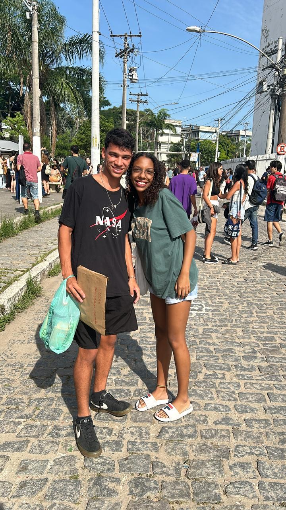
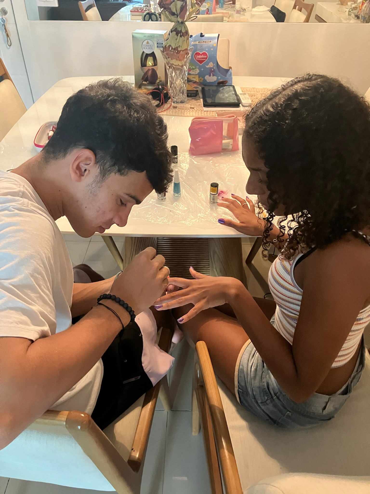
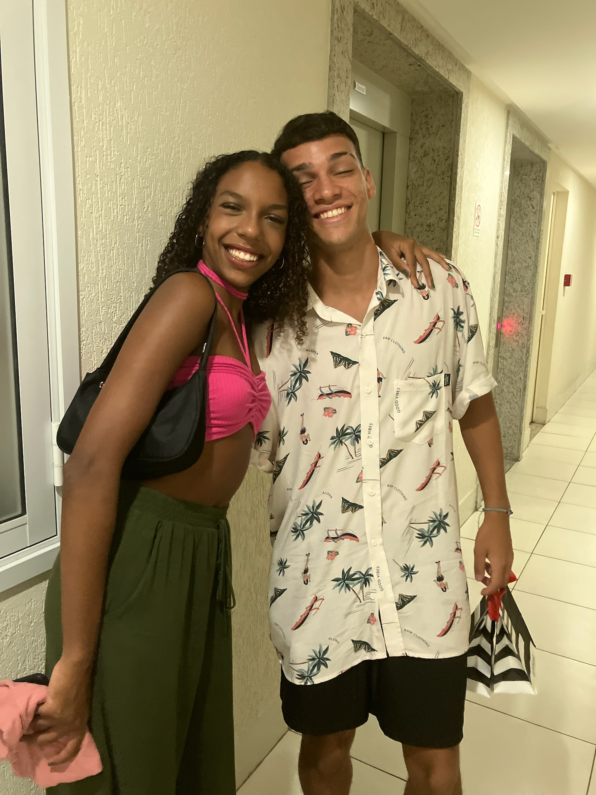
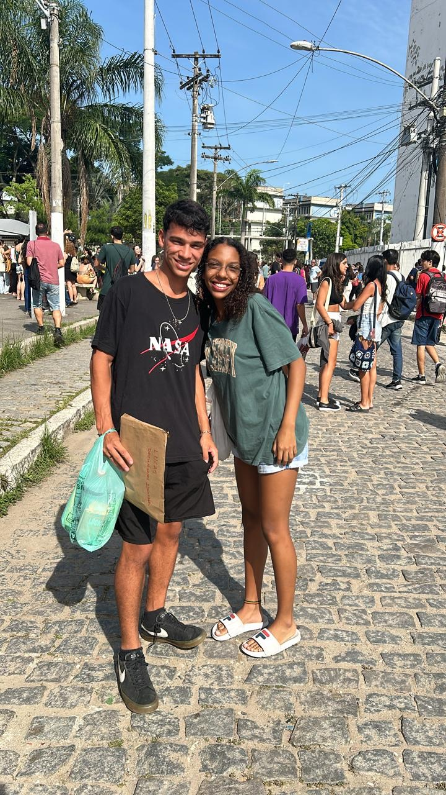
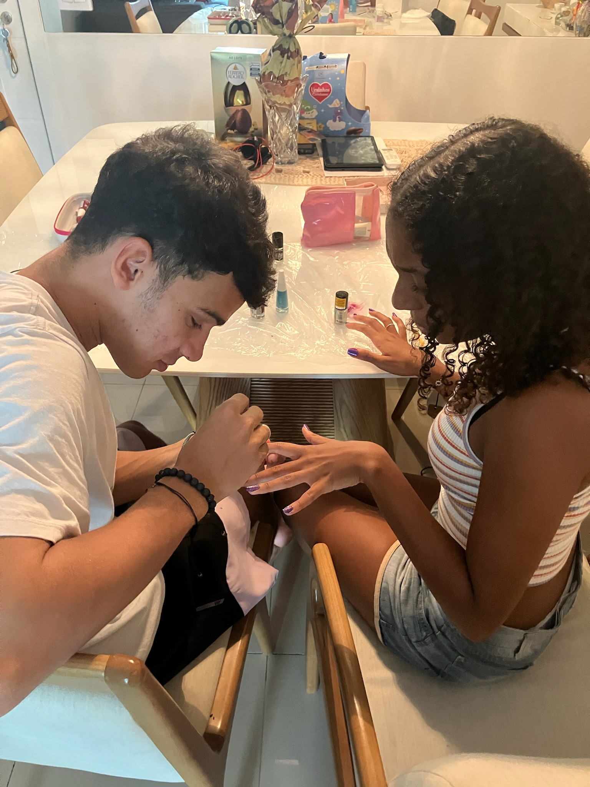
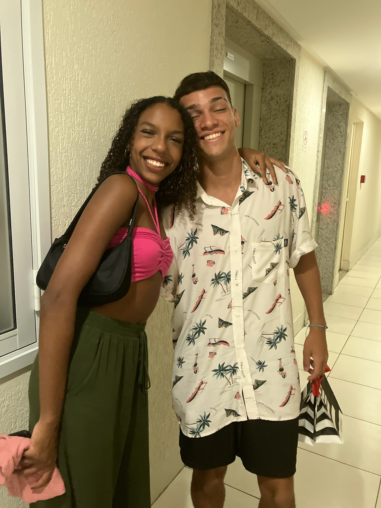

Infelizmente não é possível descrever tudo o que eu gostaria de lhe passar como mensagem em um simples texto
ou
em poucas palavras. Tenho orgulho de olhar pra trás e reconhecer todas nossas lutas, todos os desafios que
conseguimos superar com persistência, mudanças e reconhecimento dos erros, onde nosso orgulho é próximo de
nulo.
Reconheço que você me ensinou muita coisa e que foi um dos maiores catalisadores pra minha melhoria como
pessoa
e o incentivo para eu transformar meus antigos hábitos em apenas histórias do meu passado.
De longe essa é a melhor relação amorosa e de amizade em que eu já tive, amo nossa conexão, nosso
entendimento,
nossa maneira de conseguir conversar e resolver qualquer problema... Claro que temos bastante coisa à ser
aprimorada, pois querendo ou não somos apenas jovens saindo da adolescência e conhecendo o mundo real agora.
Aprendizado nunca é demais e infelizmente não somos donos da razão...
Acredito que o verdadeiro significado do amor é a capacidade de querer evoluir consigo mesmo influenciando na
consequência da melhoria da relação. Mudar o que for preciso, deixar hábitos que não são congruentes à
felicidade do casal por um todo, e sempre tentar e se esforçar à entender o que o outro sente... Porque só nós
dois sabemos o quão difícil alguns dias podem ser.
Há dias em que passamos por MUITO stress e por final acábamos por ser grosso um aooutro sem perceber. Há dias
em
que estamos um pouco mais pra baixo por algum cansaço da rotina ou por algum problema em específico, mas o que
importa é ter lá no fundo a noção do critério de que.. Quando tiverem dias em que um de nós estiver com apenas
com 10% da saúde mental e emocional em jogo, o outro deve jogar os outros 90% e vice versa... Caso ambos
estejam
com porcentagens muitos baixas, apenas pelo fato de respeitar e entender que é um dia ruim, já é o alcance dos
100%
Nosso potêncial é enorme e supera qualquer mal olhado ou obstáculos que tivermos em nosso caminho. Você foca
em
você, eu estou focando em mim, estamos mirando no nosso futuro e iremos caminhar juntos nessa... Um apoiando o
outro e construindo a ponte mais resistente possível! Nunca vou cansar de me expressar pra você, por mais que
ultimamente esteja um pouco mais complicado. Mas o que eu sempre digo? Em outras palavras, a vida é a
definição
de D I N Â M I C A, tudo é baseado em Fases e momentos... Há pontos máximos e mínimos no gráfico da vida. Oque
de fato preserva o namoro é não nos largarmos em momentos difíceis deixando a raiva tomar conta. Só nos
sabemos
o quão forte e única é a nossa intimidade...
Minha meta é chegar no futuro quando estivermos em nossa casa, com nossa filhinha prestes à nascer e pegarmos
todos esses presentes que temos até hoje e dizer. Nós conseguimos. NÓS CONSEGUIMOS PORRA... E eu vou querer
esse quadro com o qr code na nossa casa, pra ser uma inspiração e sempre lembrarmos do nosso início, da nossa
caminhada.
Oh meu amor, eu sou tão feliz com você... Prometo que continuarei dando o meu máximo pra conseguirmos de fato
oficializar todas nossas metas! E obrigado por reativar o meu brilho de querer mudar e melhorar cada vez mais,
por mesmo saber das coisas que eu passo em casa sempre estar disposta a me ouvir e me acolher...
Você será A
arquiteta, a mais procurada do estado do Rio de Janeiro e em um futuro depois de alguns anos na área, umas das
mais renomadas do Brasil!!! E em minha mente, a certeza que tive que você vai passar na uff é exatamente a
mesma que eu tenho que você irá fazer seu intercâmbio pela Uff!!!! Você é uma baita duma mulher inteligente e
com um potêncial gigantesco, sabemos no fundo que o que você Q U I S E R, por mais distante que seja da
realidade, você consegue!
Da mesma maneira sei que eu serei um Engenheiro bem renomado no mercado, e vou
conseguir sim passar em um concurso público e trabalhar embarcado! Iremos construir nossa casa da maneira que
quisermos. O projeto é por sua parte e toda a elétrica é por minha! ( convenhamos que tenho umas ideias um
pouco malucas, logo nossa casa será diferenciada rsrsrs )
Enfim, eu espero que tenha gostado e que guarde isso com o coração. Quando sentir alguma coisa, volte aqui no
site e venha ver nossas fotos e nossas recordações!
É apenas o início..... Eu te amo, minha aninha
Com muito carinho, ❤️ Lucas feodrippe.
 




